Open slides version
From words to innovation
- Word formation processes: Which processes create completely new word forms?
- Semantic change: How can existing words develop new meanings?
- Dictionary evidence: How do dictionaries track and document new words?
Today’s focus: How do these processes work in real time? What drives innovation and how does it spread?
Research foundation
Social networks of lexical innovation
Würschinger, Quirin. 2021. “Social Networks of Lexical Innovation. Investigating the Social Dynamics of Diffusion of Neologisms on Twitter.” Frontiers in Artificial Intelligence 4: 106. https://doi.org/10.3389/frai.2021.648583.
Research approach
- Longitudinal study: 99 English neologisms tracked on Twitter
- Multi-method analysis: Frequency measures + social network analysis
- Temporal dynamics: Usage patterns, volatility, and diffusion over time
- Social pathways: How innovations spread through communities
Key insights
- Frequency alone is insufficient - need temporal and social information
- Social diffusion varies significantly - even words with similar frequency show different patterns
Today’s session structure
We’ll explore the theoretical framework and empirical findings:
- Theoretical models: S-curve and EC-Model for understanding innovation
- Operationalisation: How to measure diffusion using corpus methods
- Practical application: Hands-on analysis with case study words
- Comparative analysis: Your findings vs. published research
Goal: Understand both the theory and practice of studying lexical innovation
The interplay of cultural and linguistic innovation
Society and language change
Key principle: Society continually changes as new practices and products emerge.
- These changes typically first manifest themselves in language on the level of lexis.
- Language change occurs through neologisms (new words or new meanings).
- Knowledge of words is conventional: speakers learn form-meaning pairings.
Types of neologisms
Semantic neologisms
- hotspot (from physical location → infection cluster)
- social distancing
- spreader (person → virus transmitter)
- Querdenker (lateral thinker → conspiracy theorist)
Lexical renaissance
Innovation after lexical attrition: old words returning to use.
Examples:
- dotard (revived during political discourse)
- to furlough (returned during economic crises)
Pattern: Social changes can revive forgotten vocabulary when circumstances make old words newly relevant.
The S-curve model of lexical innovation
Integration of diffusion stages
Early adoption: Innovative users introduce new words.
Acceleration: Rapid spread through social networks.
Deceleration: Slower growth as market saturates.
Stabilisation: Word becomes established in conventional usage.
EC-Model: Entrenchment and conventionalisation
The dynamics of the linguistic system (Schmid 2020)
Conventionalisation: part of the conventional language system.
Entrenchment: storage in speakers’ mental lexicon.
Pathways of diffusion
Types of linguistic variation and diffusion
Dimensions of diffusion
Across speakers and communities
- Regional spread
- Social group adoption
- Age group patterns
Across text types
- Formal vs informal contexts
- Academic vs popular writing
- Spoken vs written language
Operationalisation: frequency as indicator
Theoretical foundation
Frequency as indicator for entrenchment and conventionality (Stefanowitsch and Flach 2017):
- Corpus-as-input: language in corpora represents potential exposure to speakers.
- Corpus-as-output: language used by speakers represents degrees of entrenchment.
Frequency measures
Examples from Würschinger (2021):
Total frequency patterns
Most frequent:
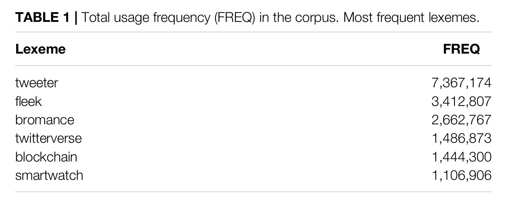
Least frequent
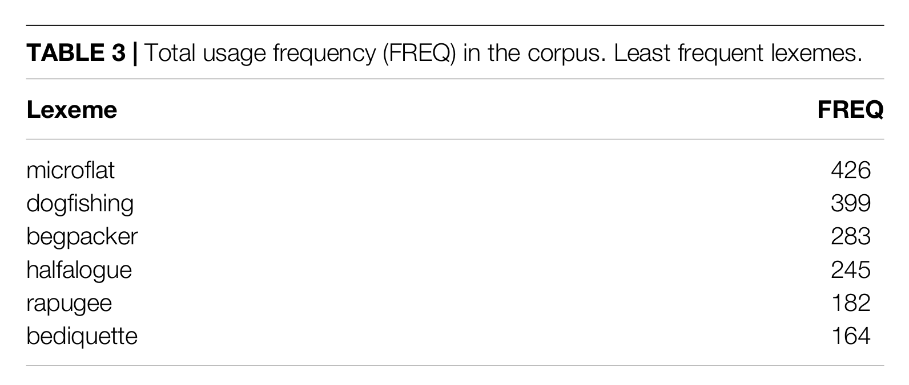
Case study selection
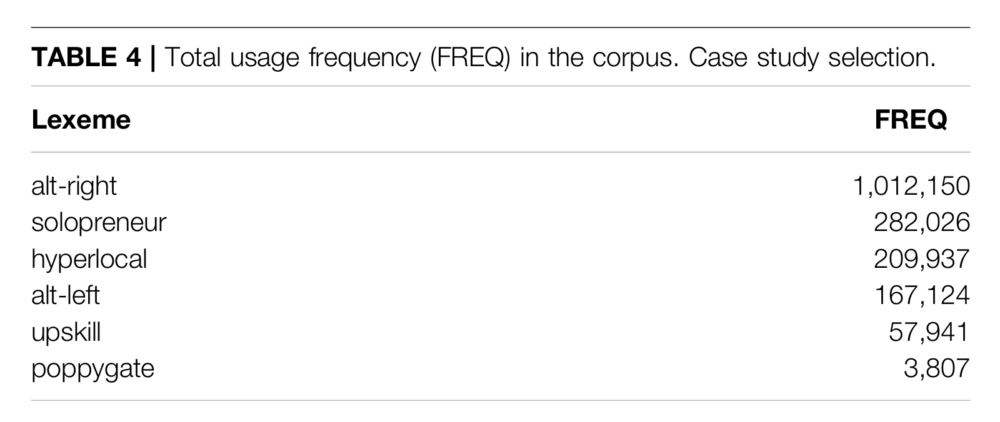
Frequency over time (diachronic analysis)
Cumulative frequency
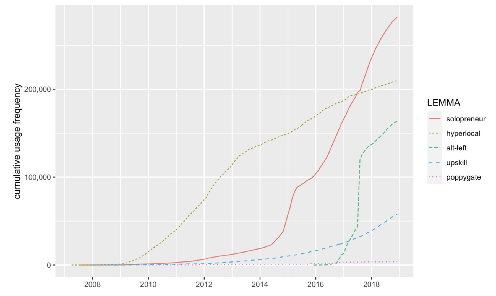
Raw frequency
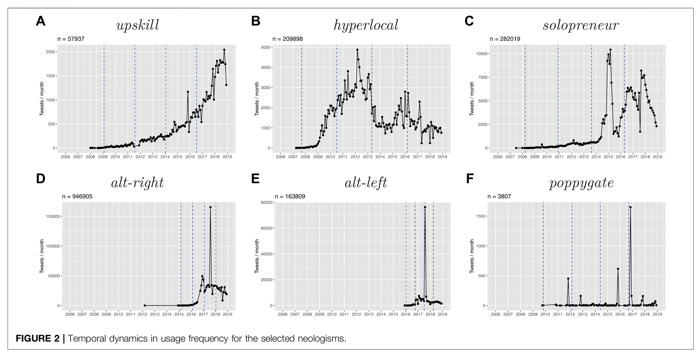
Diffusion over time
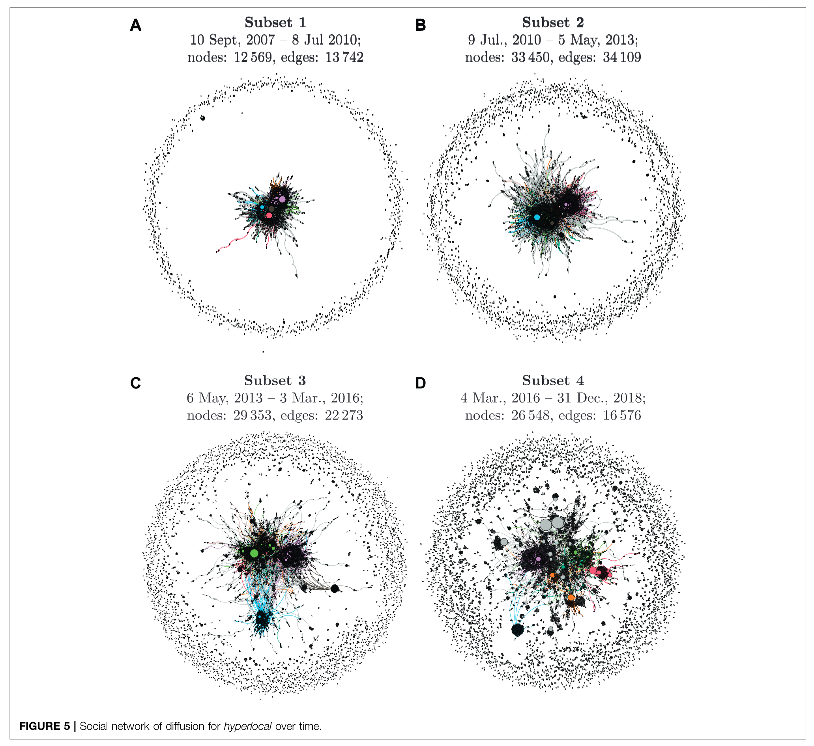
Diffusion across communities
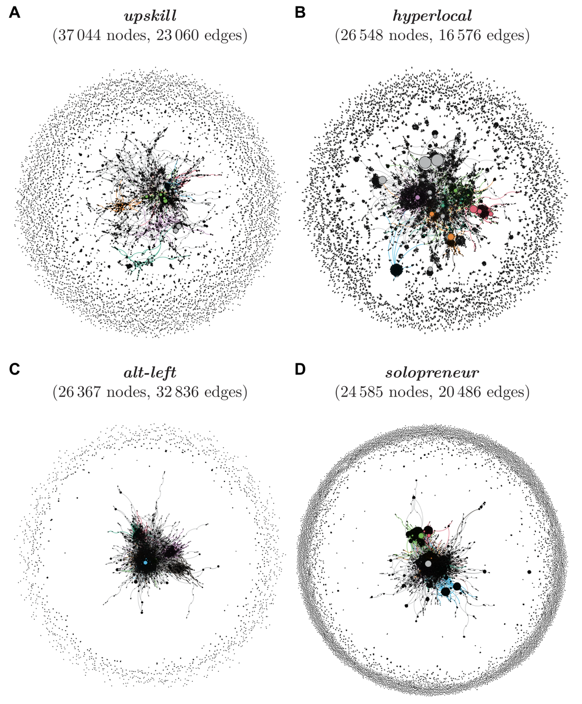
Diffusion across text types
bro in COCA
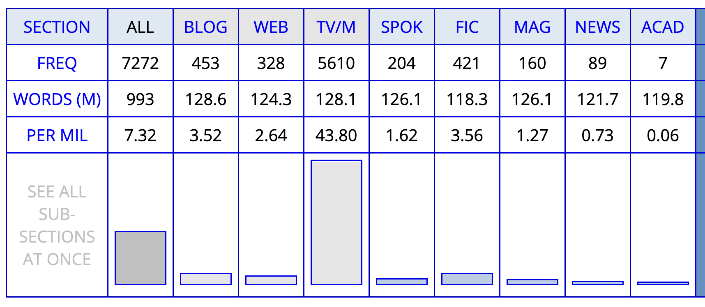
brother in COCA
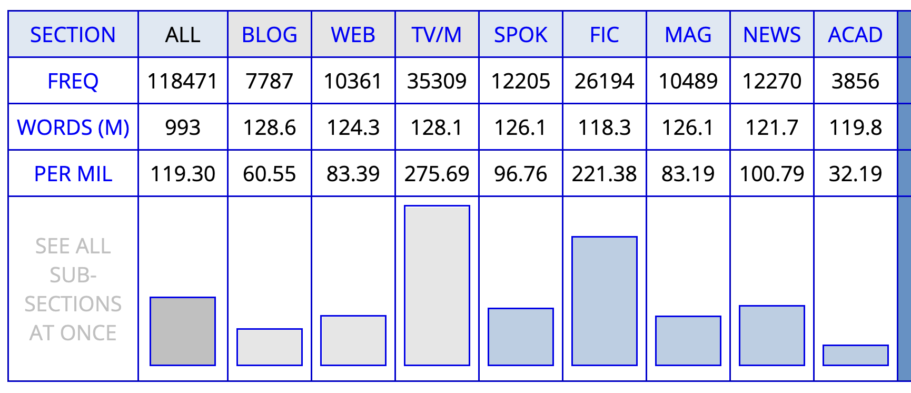
Practice: identifying pattern of lexical innovation
OED’s Advanced Search
Use the OED’s Advanced Search to retrieve all words that have first been used since 2000.
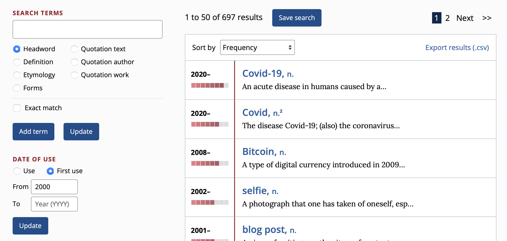
Export the results as a csv file.
Excel analysis
Model sheet: https://1drv.ms/x/c/9a2ec97d593520f9/EbTMdPaevpFJqGqbQT43l3YBf2Pg02PJ8On1XOLh1JiBcA
- import the
csv file into Excel
- create a
Table that spans the imported data (without metadata)
- created
Pivot Tables to analyse the data
Analysis:
- What are the most frequent word classes among the target neologisms?
- What is their distribution across dates of first use?
- Which word-formation processes are most common?
- Which subject areas are most prevalent?
Sketch Engine analysis
Use Sketch Engine and the BNC 2014 Spoken to analyse the frequency and distribution of the target neologisms.
In Excel, selected a sample (e.g. n=20) of the target neologisms based on frequency (column Frequency Band Number).
In Sketch Engine, search for all of these neologisms in one go by concatenating them in a single CQL query. For example:
[word="retweet|hashtag|podcast|stan|Covid-19|photobomb|upvote|Covid|deadname|Bitcoin|stablecoin|selfie|SARS|open-world|vlog|vape"]
Analyse the results by using the Frequency tool.
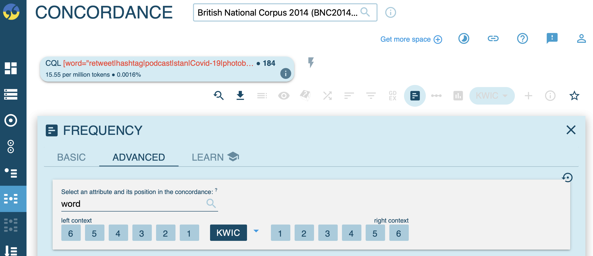
- Frequency by
word:
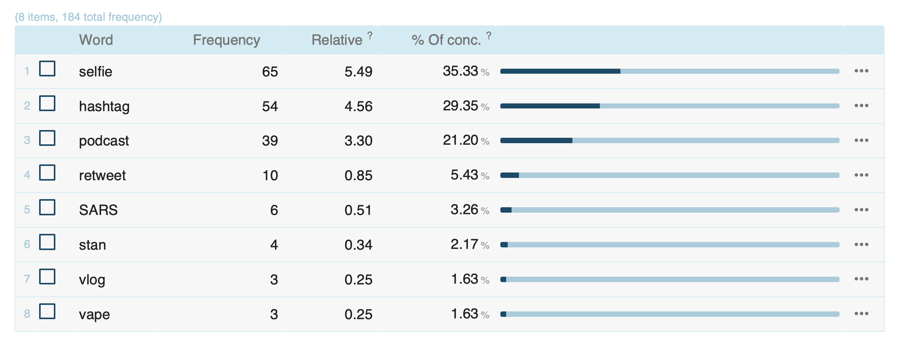
- Frequency by
Age range:
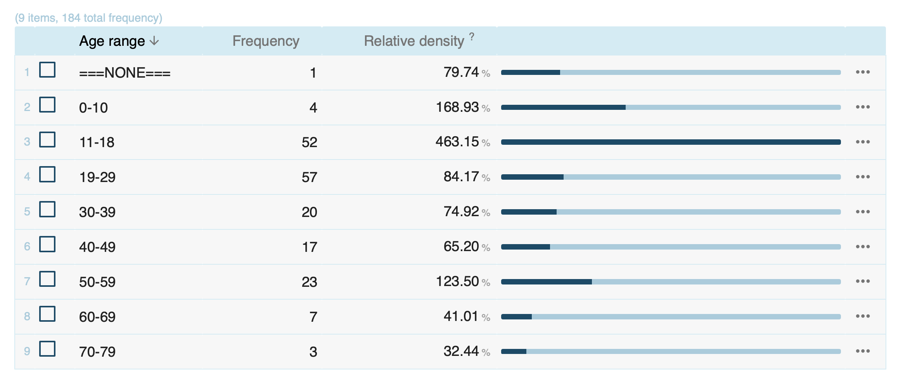
Summary
- Cultural and linguistic innovation are intertwined: societal changes drive lexical innovation.
- S-curve model describes diffusion patterns from innovation to stabilisation.
- EC-Model explains entrenchment and conventionalisation through frequency.
- Diffusion occurs across multiple dimensions: speakers, communities, and text types.
- Corpus methods enable empirical study of innovation and diffusion patterns.
References
Kerremans, Daphné. 2015.
A Web of New Words. Bern: Peter Lang.
https://doi.org/10.3726/978-3-653-04788-2.
Kortmann, Bernd. 2020. English Linguistics: Essentials. J.B. Metzler.
Schmid, Hans-Jörg. 2020. The Dynamics of the Linguistic System. Usage, Conventionalization, and Entrenchment. Oxford: Oxford University Press.
Stefanowitsch, Anatol, and Susanne Flach. 2017. “The Corpus-Based Perspective on Entrenchment.” In Entrenchment and the Psychology of Language Learning: How We Reorganize and Adapt Linguistic Knowledge, edited by Hans-Jörg Schmid, 101–28. Boston, USA: American Psychology Association and de Gruyter Mouton.
Würschinger, Quirin. 2021.
“Social Networks of Lexical Innovation. Investigating the Social Dynamics of Diffusion of Neologisms on Twitter.” Frontiers in Artificial Intelligence 4: 106.
https://doi.org/10.3389/frai.2021.648583.
Social networks of lexical innovation
Würschinger, Quirin. 2021. “Social Networks of Lexical Innovation. Investigating the Social Dynamics of Diffusion of Neologisms on Twitter.” Frontiers in Artificial Intelligence 4: 106. https://doi.org/10.3389/frai.2021.648583.
Research approach
Key insights